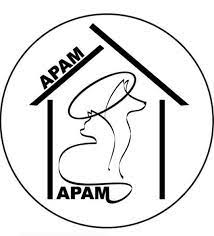
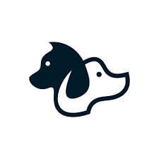

Ongs/Protetores
O programa PetS tem parceira com as seguintes ONGS que disponibilizam a imagens de seus animais para adotar. Caso seja uma ONG interessada em fazer parte da PetS por favor entrar em contato pelo e-mail pets@gmail.com e saiba mais sobre o processo de cadastramento.

Associação Portal dos Anjos Manaus
Endereço: Tv. Ouroeste, 2 - Aleixo, Manaus - AM, 69060-330

ONG Peludinhos
Endereço: Avendia 2, 2 - Aleixo, Manaus - AM, 69060-300
A PetS é um programa criado para facilitar o encontro seu amigo de quatro patas. Sendo através de ONG ou responsável do pet.